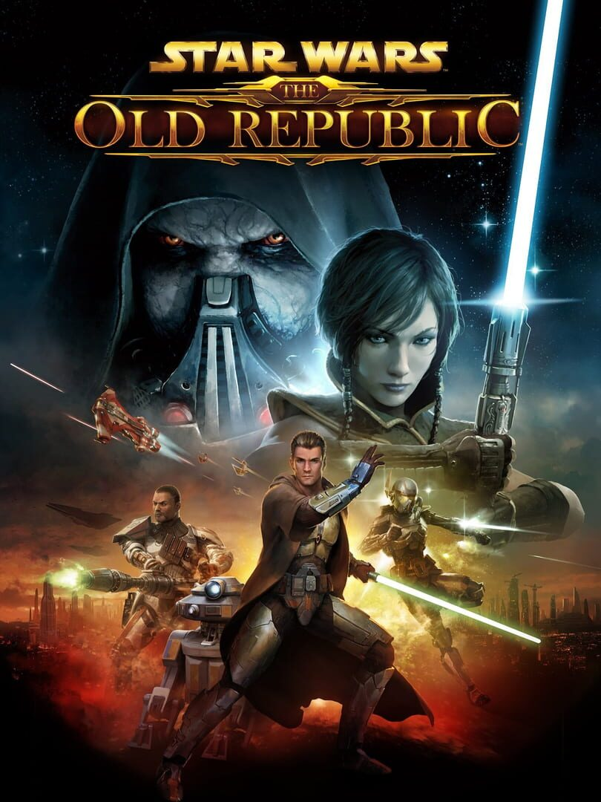

STAR WARS: The Old Republic
STAR WARS: The Old Republic
Details
|  | |
| Spielzeit | 11h 15m 0s |
| Letzte Aktivität | 09.01.2021 19:42:50 |
| Hinzugefügt | 08.11.2020 23:27:52 |
| Modifiziert | 10.11.2022 13:16:33 |
| Fertigstellungsstatus | Played (closed) |
| Bibliothek | Steam |
| Quelle | Steam |
| Plattform | PC (Windows) |
| Veröffentlichungsdatum | 21.07.2020 |
| Community Bewertungen | 85 |
| Kritiker Punkte | 85 |
| Benutzerwertung | |
| Genre | Free to Play |
| Entwickler | BioWare |
| Verleger | Electronic Arts |
| Eigenschaft | Achievements Co-op In App Käufe Multiplayer Steam Karten |
| Links | Communityhub Diskussionen Guides Neuigkeiten Shopseite PCGamingWiki Errungenschaften |
| Tag | |
Beschreibung
STAR WARS™: The Old Republic™ is the only massively multiplayer online game with a Free-to-Play option that puts you at the center of your own story-driven STAR WARS™ saga. Play as a Jedi, a Sith, a Bounty Hunter, or as one of many other iconic Star Wars roles and explore the galaxy far, far away over three thousand years before the classic films. With 5 narrative expansions, become the hero of your own STAR WARS adventure as you choose your path down the Light or Dark side of the Force™.


Create your legacy.
Make meaningful choices throughout your journey and become the hero of your personal STAR WARS saga. The game includes an interactive storyline with cinematic dialogue and full voiceover for all in-game characters.A growing world awaits.
For more than 8 years, players have been able to live out their own Star Wars stories. With the most recent Onslaught expansion, STAR WARS™: The Old Republic™ continues to deliver ongoing content through regular updates.8 playable classes.
Do you prefer the elegance of a lightsaber or the reliability of a good blaster by your side? Choose from one of 8 iconic roles and make your mark on the galaxy! Each class has a unique storyline, allowing you to create your own personal STAR WARS story.Explore numerous planets.
Hoth, Tatooine, Alderaan, and over 20 other unique and vibrant planets offer exciting exploration and thrilling adventures around every corner!Multiplayer gameplay.
Gather your allies to face challenging encounters against enemy bosses in Flashpoints and Operations, or battle against other players in Player vs. Player Warzones, Arenas, or Galactic Starfighter missions!Galactic Strongholds
Want to take a break from the inter-galactic traveling and adventure? Kick back and relax with our player housing system called Galactic Strongholds! Whether it’s overlooking the sandy dunes of Tatooine, the bright cityscape of Nar Shaddaa, or the tranquil mountains of Alderaan, there’s a Stronghold for everyone. These destinations and more are available for your galactic homestead!Cartel Market.
Only the slickest items can make their way to the Cartel Market, the premium marketplace for the galaxy’s most sought-after commodities. Players wishing to buy things here will need to purchase in-game currency called Cartel Coins. Learn more about what Cartel Coins can unlock on our Cartel Coins Page.Subscriber Benefits.
STAR WARS™: The Old Republic™ offers an optional subscription that allows you to experience even more of the STAR WARS universe. Benefits include an increased level cap of 75 and access to the most recent expansions: Onslaught, Knights of the Eternal Throne, and Knights of the Fallen Empire. In addition, you will receive a monthly Cartel Coin Grant, increased XP, and more. Details on Subscriber Benefits can be found on our Subscriber Page.